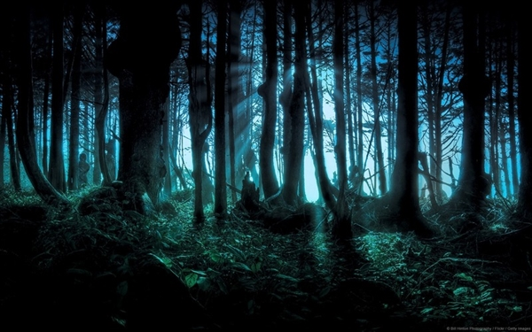

Publicado por Guiferreira em 24/04/2020---Atualizado em 17/05/2020
Todos nós já tivemos experiências que nos proporcionaram sensações curiosas por serem diferentes do que habitualmente vivenciamos em nosso dia a dia.
São várias as histórias que nos assombram desde pequenos, histórias de terror, folclores, casas mal assombradas são exemplos disso, pórem este site está destinado a mostrar o que a natureza tem de mais belo para nos mostrar, ou não tão belo assim para alguns...Aqui você verá desde alguns lugares espalhados pelo mundo em que mistérios e acontecimentos nunca foram desvendados até locais onde tem acesso restrito para entrada no mesmo, onde exitem fotos excepcionais e várias histórias.
Alguns deles são simplesmente impossíveis de serem visitados, enquanto outros colocam a vida dos visitantes em risco no
instante em que lá se pisa. A viagem para saciar tais desejos pode ser, afinal, realmente perigosa.
Se desejar conhecer esses locais para os curiosos de plantão é inevitável, realizar tal desejo de fato é radicalmente não recomendado. Por aqui, no entanto, a visita é permitida. Prepare sua curiosidade e coragem virtual, pois aqui estão alguns dos mais misteriosos, perigosos e proibidos locais do planeta – a viagem é por sua conta e risco.
A imagem acima acima é de uma floresta de uma história fictícia chamada de Floresta Jungle Reader, onde pessoas que entram nela acabam sumindo. Mas esta é apenas uma história não real, agora para lugares e histórias verídicas que é o foco do blog, acesse a aba na barra lateral superior a esquerda em Locais Existentes.